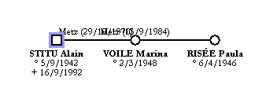
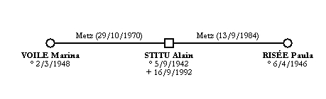

Il faut, au préalable, sélectionner une ou plusieurs personnes. Ensuite, cliquez sur le bouton  ou allez dans le menu Personnes et choisissez Conjoints. Plusieurs situations peuvent se présenter :
ou allez dans le menu Personnes et choisissez Conjoints. Plusieurs situations peuvent se présenter :
Exemple : demande d'ajout des conjoints d'Alain STITU. Le logiciel propose la liste des conjoints :

Par défaut, GénéGraphe vous propose d'ajouter tous les conjoints de la personne. Si vous ne voulez pas ajouter une ou plusieurs personnes, il suffit de cliquer dans la colonne Ajouter pour les décocher.
Quand vous cliquez sur Valider, le logiciel affiche les personnes sélectionnées :

Il vous reste à déplacer les personnes pour obtenir une belle présentation :
